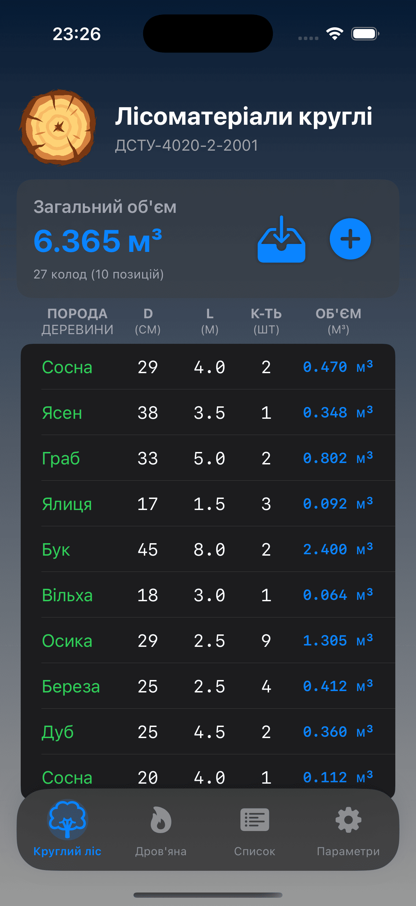
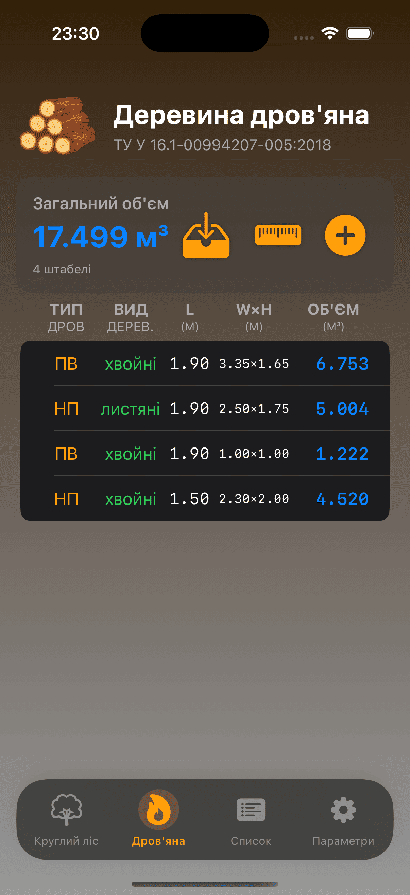
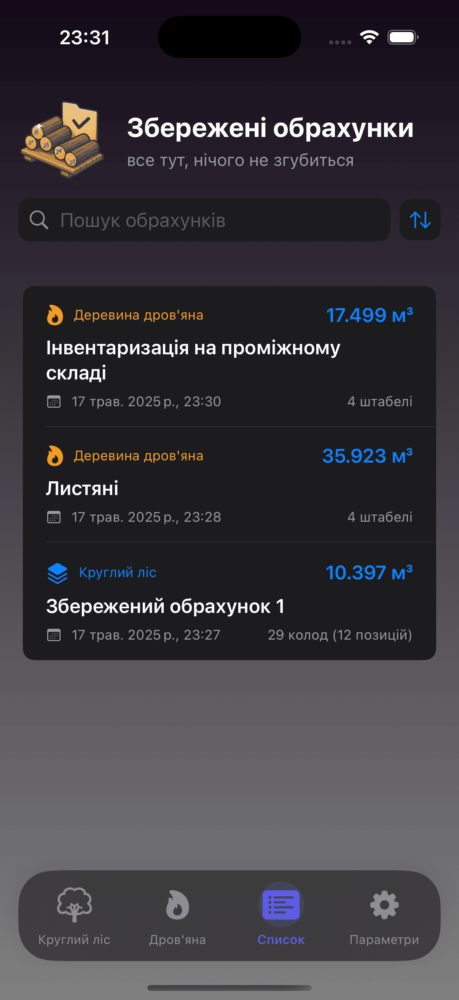
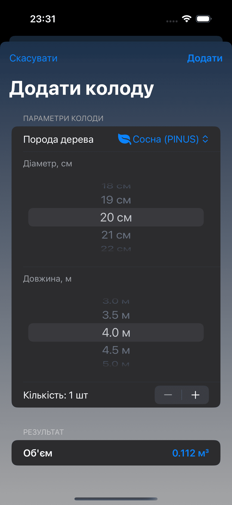
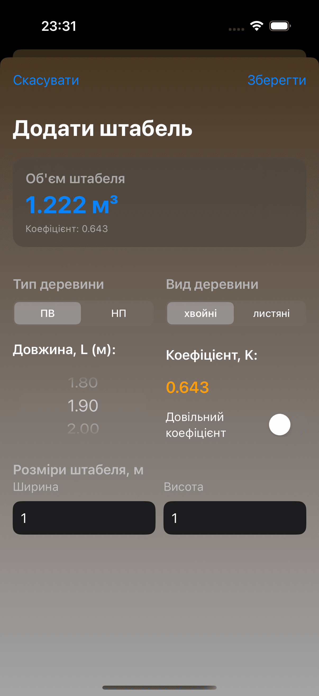
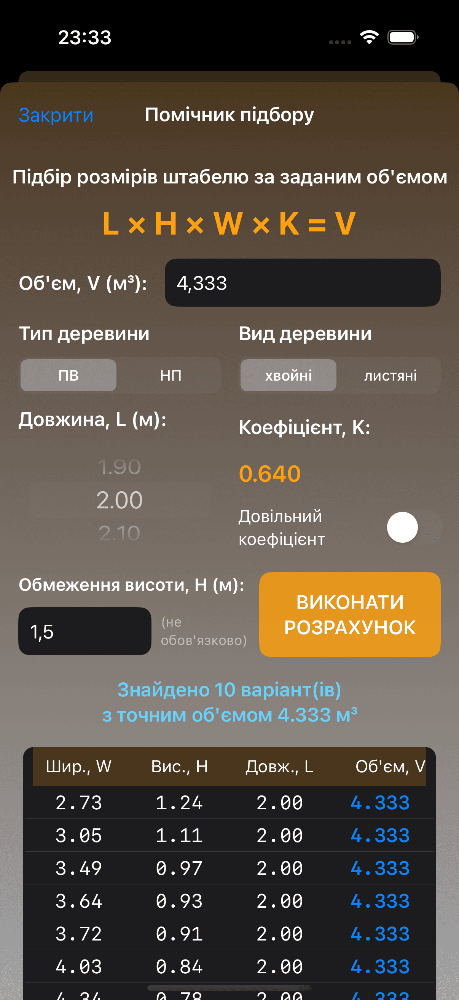

Ваш надійний інструмент для точного обрахунку об'ємів лісоматеріалів та дров'яної деревини.
WoodMaster – це спеціалізований мобільний додаток, розроблений для швидкого та точного визначення об'ємів круглих лісоматеріалів та деревини дров'яної. Розрахунки базуються на офіційних стандартах, що гарантує достовірність результатів.
Обрахунки проводяться згідно з:
ДСТУ-4020-2-2001 "Лісоматеріали круглі та пиляні. Методи обмірювання та визначення об'ємів. Частина 2. Лісоматеріали круглі"
ТУ У 16.1-00994207-005:2018 "Деревина дров’яна. Технічні умови"
Основні можливості WoodMaster:
Обрахунок круглих лісоматеріалів: Виберіть породу, діаметр, довжину та кількість колод для отримання точного об'єму кожної позиції та загального об'єму.
Обрахунок дров'яної деревини: Визначайте об'єм дров, вказуючи тип (ПВ/НП), вид деревини (хвойні/листяні), довжину, розміри штабеля (ширина, висота) та коефіцієнт повнодеревності.
Збереження обрахунків: Зберігайте всі ваші розрахунки для подальшого перегляду та аналізу. Легко знаходьте потрібні дані за допомогою пошуку.
Деталізація по позиціях: Переглядайте список всіх внесених колод або штабелів з їхніми параметрами та індивідуальними об'ємами.
Інтуїтивне введення даних: Зручні форми для додавання нових колод або штабелів з вибором параметрів зі списків або ручним введенням.
Помічник підбору штабелів: Унікальна функція для підбору оптимальних розмірів штабеля (ширина, висота, довжина) за заданим цільовим об'ємом, типом, видом деревини та коефіцієнтом.
Налаштування параметрів: Можливість керувати основними налаштуваннями додатку.
Зручний інтерфейс: Простий та зрозумілий дизайн для комфортної роботи.
WoodMaster у дії:

Обрахунок круглих лісоматеріалів

Обрахунок дров'яної деревини

Список збережених обрахунків

Додавання нової колоди

Додавання нового штабеля

Помічник підбору розмірів штабелю
Чому WoodMaster?
Точність: Всі розрахунки відповідають чинним державним та галузевим стандартам України.
Ефективність: Значно прискорює процес обліку деревини, заощаджуючи ваш час.
Зручність: Всі необхідні інструменти та дані завжди під рукою у вашому смартфоні.
Організованість: Зберігайте історію розрахунків та легко керуйте нею.